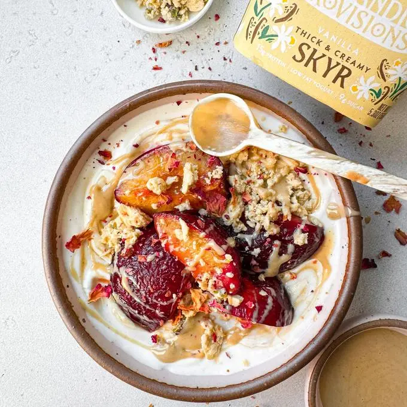

Skyr with Honey and Nuts

Description
Skyr is a tradicional Icelandic dairy product, similiar to yogurt, that was enjoyed by Vikings. It is high in protein and can be enjoyed with a variety of toppings.
Ingredients
- 2 cups skyr
- 4 tbsp honey
- 1/2 cup mixed nuts, chopped
- 1/2 cup mixed berries (optional)
Instructions
- Divide the skyr among four serving bowls
- Drizzle each bowl with honey and top with chopped nuts and berries, if desired
- Serve immeddiately
Home